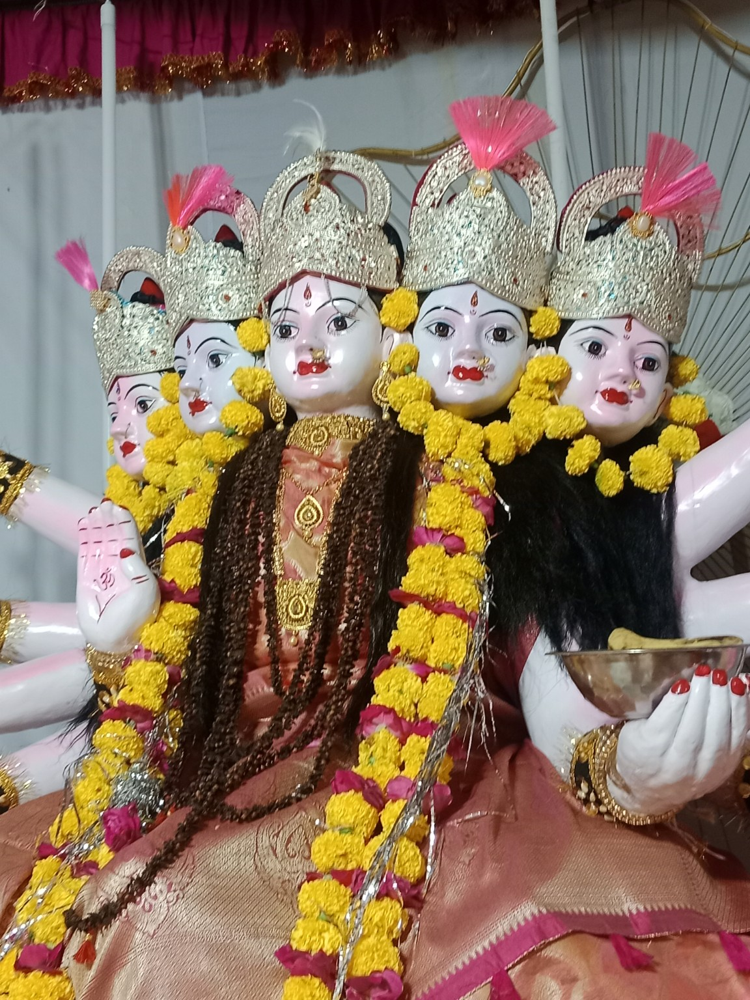
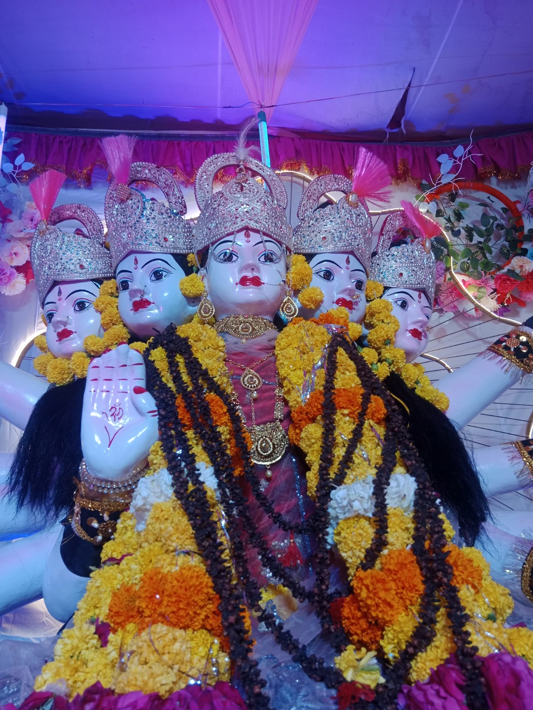
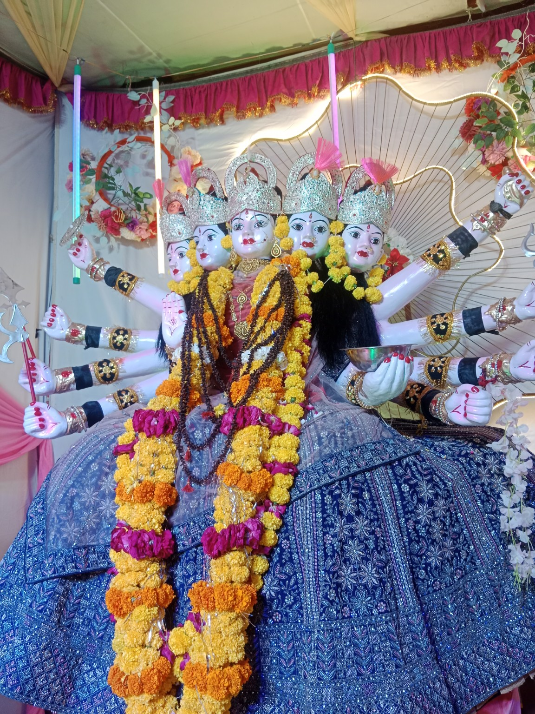
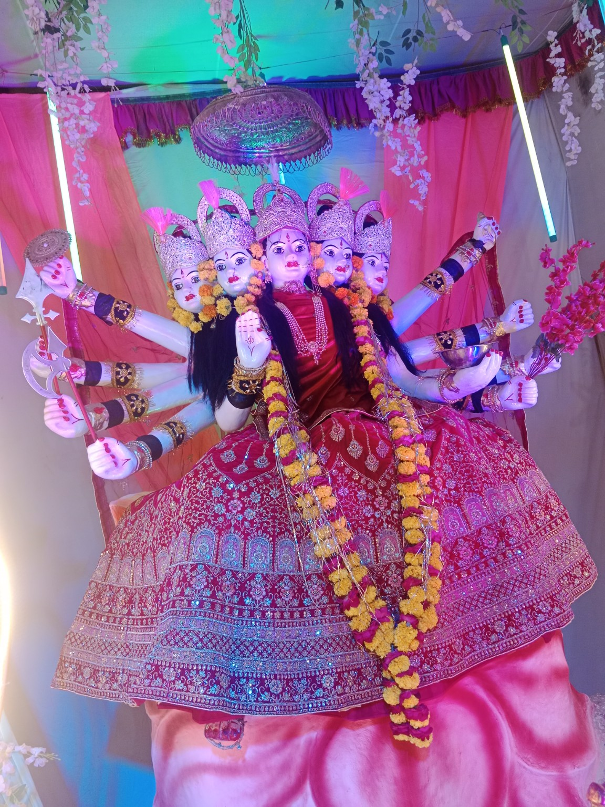
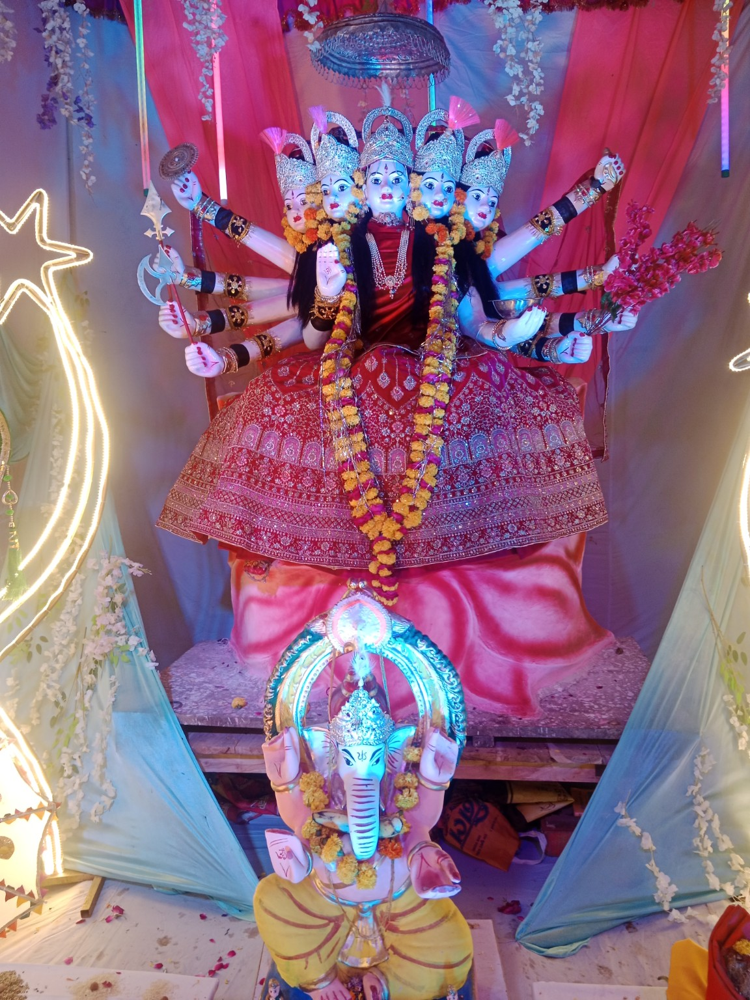
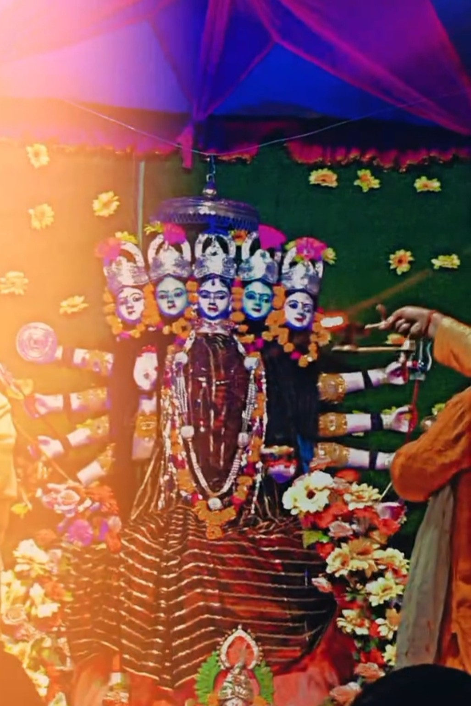

🙏 Divine View
Darshan
माँ के पावन स्वरूप के सुंदर दर्शन
🌺 Maa Ji Ka Darshan
माँ के अलग-अलग श्रृंगार और पावन स्वरूपों की झलकियाँ।







🪔 Aarti Darshan
माँ के दरबार में आरती के समय भक्तों की श्रद्धा और भक्ति से भरा वातावरण।
